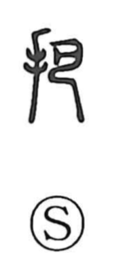

把

Uncategorized
Kun: | On: ha
to grasp ・ to seize ・ handle ・ bundle
Explanation
把 is a phono-semantic character: the hand element joins 巴, the pictograph of a vessel’s handle, which also provides the on reading ha. It portrays taking a handle in the hand—grasping, seizing, or holding—and by extension can name the handle itself. Classical glosses already define it as “to clasp.” From this concrete action arose the figurative sense seen in compounds like 把握 (haaku), the firm grasp or thorough command of the essential points.